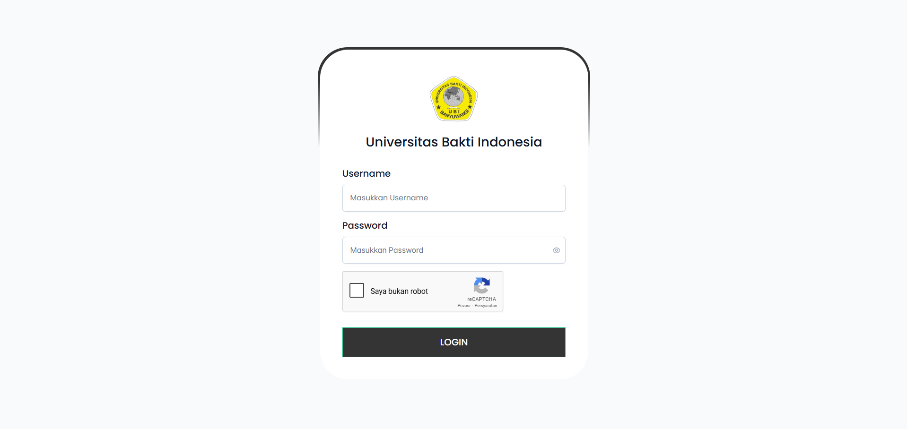
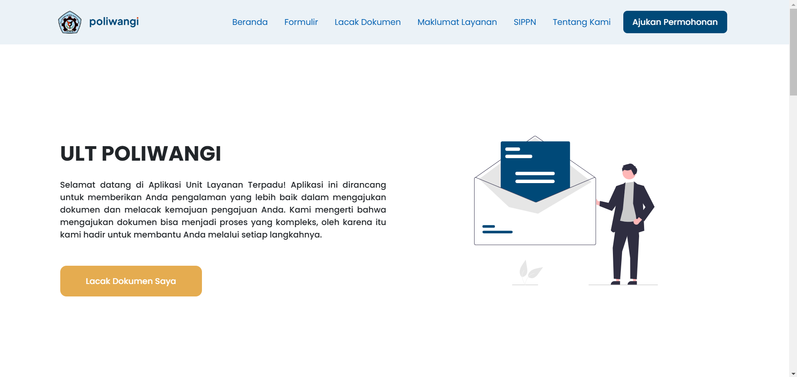
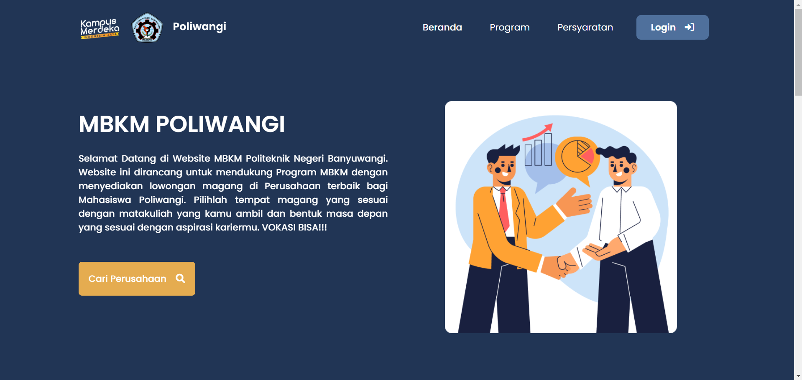
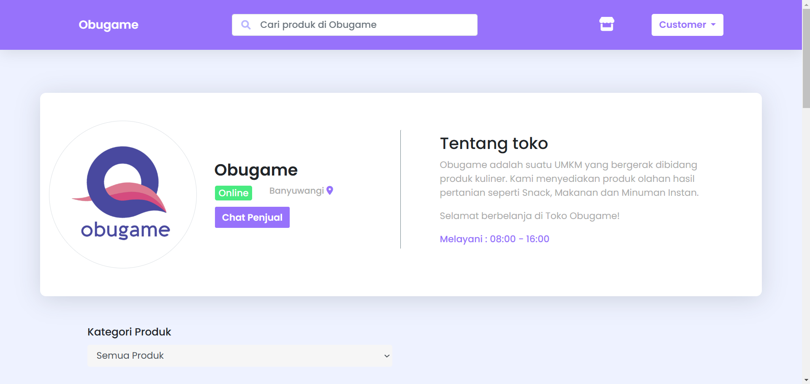
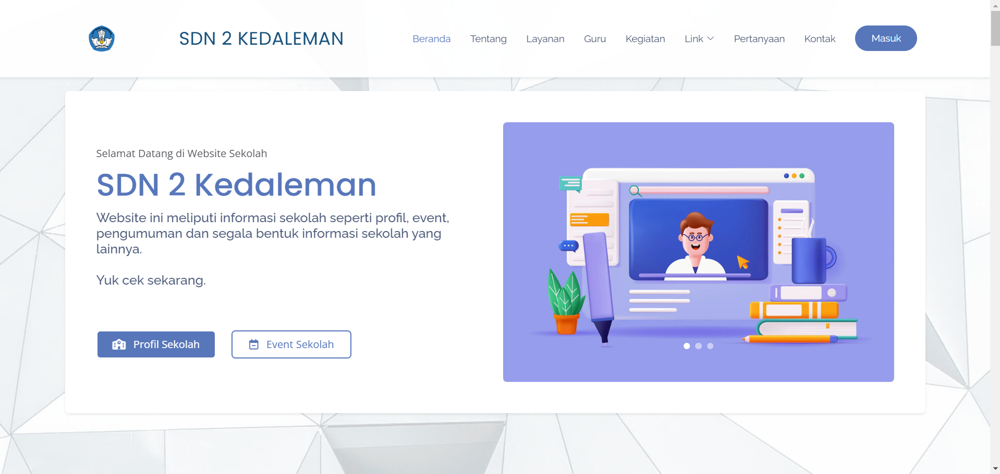
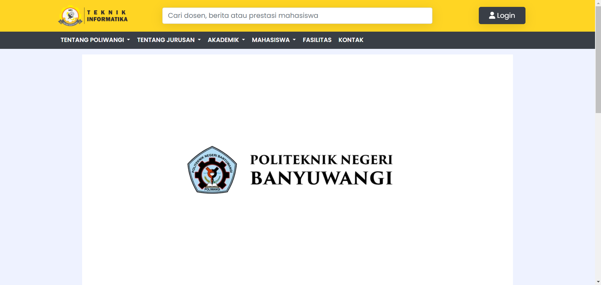

Proyek
Proyek Pengembangan Aplikasi
Berikut adalah beberapa Aplikasi Berbasis Web yang Telah Saya Rancang dan Bangun

Sistem Informasi Akademik
Pengembangan Aplikasi Siacloud (Sistem Informasi Akademik) - Pengembangan Backend dengan Framework Express JS


Unit Layanan Terpadu
Pengembangan Aplikasi ULT (Unit Layanan Terpadu) - Pengembangan Fullstack dengan Framework Laravel

Merdeka Belajar Kampus Merdeka
Pengembangan Aplikasi MBKM Poliwangi - Pengembangan Fullstack dengan Framework Laravel

Mini E-Commerce
Pengambangan Aplikasi Mini E-Commerce untuk UMKM Obugame - Pengembangan Fullstack dengan Framework Laravel

Web Profiling School
Pengembangan Aplikasi Web Profil Sekolah untuk SDN 2 Kedaleman, Rogojampi - Pengembangan Fullstack dengan Framework Laravel

Web Jurusan Teknik Informatika
Pengembangan Aplikasi Web Jurusan untuk Teknik Informatika Poliwangi - Pengembangan Fullstack dengan Framework Laravel